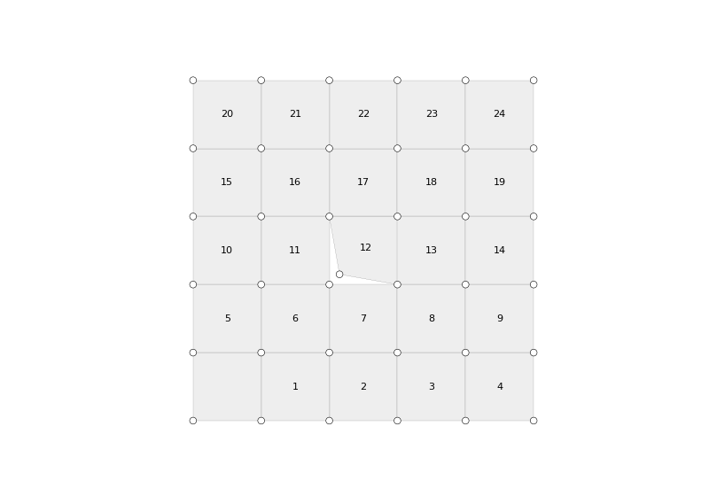

Mesh.unweld_vertices
-
Mesh.unweld_vertices(fkey, where=None) Unweld a face of the mesh.
- Parameters
mesh (Mesh) – A mesh object.
fkey (hashable) – The identifier of a face.
where (list (None)) – A list of vertices to unweld. Default is to unweld all vertices of the face.
Examples
import compas from compas.datastructures import Mesh from compas.plotters import MeshPlotter from compas.geometry import subtract_vectors mesh = Mesh.from_obj(compas.get('faces.obj')) vertices = set(mesh.vertices()) fkey = 12 where = mesh.face_vertices(fkey)[0:1] centroid = mesh.face_centroid(fkey) face = mesh.unweld_vertices(fkey, where) for key in face: if key in vertices: continue xyz = mesh.vertex_coordinates(key) v = subtract_vectors(centroid, xyz) mesh.vertex[key]['x'] += 0.3 * v[0] mesh.vertex[key]['y'] += 0.3 * v[1] mesh.vertex[key]['z'] += 0.3 * v[2] plotter = MeshPlotter(mesh, figsize=(10, 7)) plotter.draw_vertices() plotter.draw_faces(text={fkey: fkey for fkey in mesh.faces()}) plotter.show()
